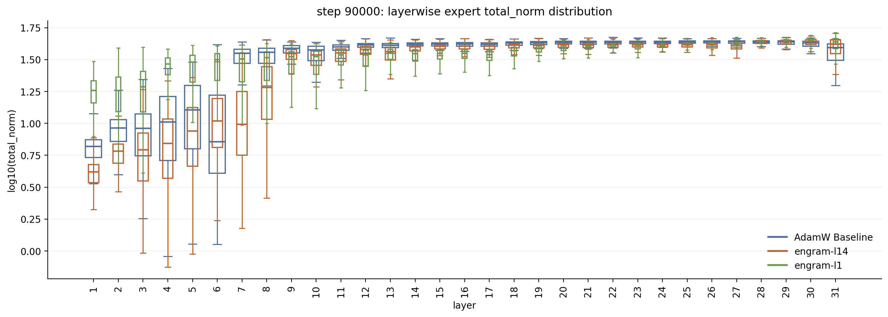

超稀疏MoE训练里有个顽疾：早期MoE层的专家学不到东西，权重norm塌掉，路由长期闲置。上一篇提出LLAL，用训练早期的临时辅助目标把它们救回来，验证loss更低、下游分数更高、早期负载更均衡，辅助目标撤掉后早期专家利用率还在。
但救回来之后，这些专家到底在干什么？这篇后续用冷知识预测和逐层专家遮蔽追踪LLAL建立的持久功能，再用Engram记忆模块的两种插入位置做互补验证。
LLAL全称Language Modeling Loss as an Auxiliary Loss。做法很直接：在训练最初的一个短窗口里，给早期MoE层加一个辅助语言建模目标，用共享的LM head做预测，损失记为ℒ=ℒ_LM+λ_aux·ℒ_aux，窗口结束后撤掉。上一篇的设置里，额外训练计算不到0.3%。
观测到的收益有四条：验证loss更低、下游分数更高、早期层负载均衡更好、辅助目标撤掉后早期专家利用率持续存在。这一篇要回答的是：这些被救回来的专家，到底建立了什么持久功能。
主对比是AdamW 2T和Muon两个模型，各带一个LLAL版本，外加两个Engram模型（记忆模块插在不同深度）。层号从0起，L0是稠密层，L1是第一个MoE层。
冷知识用FineWeb里主题名出现次数做稀有度代理：冷知识主题最多出现100次，常见主题超过1000次。每个被测层只把路由专家的输出清零，保留共享专家、注意力和残差连接，这是分支干预，不是删整层。
ΔNLL为正表示该分支对目标预测有用，遮掉后目标变难，单位是每个目标片段的nat；为负表示遮掉反而变好。读数有两种：绝对ΔNLL看预测贡献，冷知识与常见知识的对比看是否专攻冷知识。姓名补全只用未改动模型在teacher forcing下每个目标位置都预测正确的目标。
| 任务 | 数据集 | 预测目标 |
|---|---|---|
| 实体名补全 | PopQA姓名:6,417 | 给定名字的第一个词，补全剩余词 |
| 事实回忆 | PopQA:11,822 | 问答或完形提示中的答案片段 |
先看前四个MoE层。AdamW 2T基线里L1和L2对这些预测几乎没影响，依赖要到L3到L4才冒头，效果还不大。问题不是模型学不会冷知识，而是前面的MoE层全程打酱油，有用的功能在后面才长出来。
加了LLAL，第一批MoE层自己变成关键。遮掉L1，冷知识姓名NLL上升0.944，常见知识只升0.025；遮掉L2，姓名补全2.158/0.108，事实问答3.154/0.865。Muon对比同样：L1的冷知识姓名效应从0.012涨到1.169。
每个格子都是冷知识组ΔNLL/常见知识组ΔNLL。短横表示未报告的测量。
| 任务 | 遮蔽 | AdamW 2T基线 | AdamW 2T LLAL | Muon基线 | Muon LLAL |
|---|---|---|---|---|---|
| 姓名补全 | L1路由 | -0.009 / -0.006 | 0.944 / 0.025 | 0.012 / 0.000 | 1.169 / 0.069 |
| 姓名补全 | L2路由 | -0.021 / -0.018 | 2.158 / 0.108 | -0.029 / -0.009 | 0.427 / 0.049 |
| 姓名补全 | L3路由 | 0.077 / 0.016 | 1.184 / -0.015 | 0.001 / -0.007 | 0.210 / 0.038 |
| 姓名补全 | L4路由 | 0.165 / 0.068 | 0.644 / 0.030 | -0.018 / -0.020 | 0.284 / 0.049 |
| 事实问答 | L1路由 | -0.004 / 0.001 | 0.713 / 0.233 | -0.023 / 0.000 | 0.882 / 0.269 |
| 事实问答 | L2路由 | 0.031 / 0.056 | 3.154 / 0.865 | -0.023 / 0.009 | 0.343 / 0.137 |
| 事实问答 | L3路由 | 0.172 / 0.151 | 1.355 / 0.228 | 0.072 / 0.051 | 0.298 / 0.188 |
| 事实问答 | L4路由 | 0.295 / 0.102 | 0.849 / 0.222 | -0.006 / 0.021 | 0.228 / 0.145 |
大局同样重要。两个LLAL模型里，每个被测路由分支在事实问答的冷知识组和常见知识组上ΔNLL全是正的，模型不是靠一个早期记忆组件干活、后面全躺平。
后面的层可以贡献预测而不必复刻前面的冷知识专攻。比如AdamW 2T LLAL事实问答L8、L10、L11分别是0.379/0.339、0.255/0.328、0.165/0.264，两组都正，没有前面那种强烈的冷知识对比。过渡也不是硬边界，中间有些层仍有可观的冷知识依赖。
这就给上一篇的稳定信号假说一个功能解释：辅助目标帮早期专家建立获取或提供冷知识的持久角色，立住之后，后续层可以在此基础上学别的预测计算。遮蔽实验定位的是依赖关系，从早期稳定功能到后面更健康学习的因果链仍是解释，不要求每层停用冷知识，也不给每个事实指定固定存放位置。
| 层 | AdamW 2T基线 | AdamW 2T LLAL | Muon基线 | Muon LLAL | Engram-L14 | Engram-L1 |
|---|---|---|---|---|---|---|
| L1 | -0.009 / -0.006 | 0.944 / 0.025 | 0.012 / 0.000 | 1.169 / 0.069 | 0.011 / 0.005 | 0.062 / 0.038 |
| L2 | -0.021 / -0.018 | 2.158 / 0.108 | -0.029 / -0.009 | 0.427 / 0.049 | 0.029 / 0.004 | 0.177 / 0.019 |
| L3 | 0.077 / 0.016 | 1.184 / -0.015 | 0.001 / -0.007 | 0.210 / 0.038 | 0.025 / 0.010 | -0.018 / -0.003 |
| L4 | 0.165 / 0.068 | 0.644 / 0.030 | -0.018 / -0.020 | 0.284 / 0.049 | 0.001 / 0.001 | 0.127 / 0.068 |
| L5 | 0.270 / 0.003 | 0.790 / 0.027 | 0.001 / 0.014 | 0.280 / 0.043 | 0.012 / 0.010 | 0.108 / 0.039 |
| L6 | 0.129 / -0.013 | 0.607 / -0.003 | -0.037 / -0.016 | 0.030 / -0.021 | 0.048 / 0.016 | 0.046 / 0.013 |
| L7 | 0.117 / 0.002 | 1.476 / 0.167 | 0.028 / -0.011 | 0.068 / -0.019 | 0.048 / 0.032 | 0.029 / 0.017 |
| L8 | 0.065 / 0.002 | 0.633 / 0.038 | 3.098 / 0.203 | 0.119 / -0.021 | -0.034 / -0.062 | -0.016 / 0.004 |
| L9 | 5.077 / 0.208 | 0.289 / 0.005 | -0.007 / -0.008 | 0.016 / -0.010 | 0.346 / -0.021 | 0.041 / 0.019 |
| L10 | 0.449 / 0.062 | 0.341 / 0.017 | 0.054 / 0.002 | 0.041 / 0.005 | 0.022 / -0.023 | -0.011 / 0.013 |
| L11 | 0.481 / 0.013 | 0.201 / 0.009 | 0.146 / 0.040 | 0.141 / -0.015 | -0.017 / -0.057 | 0.005 / 0.018 |
| L12 | – | – | – | – | 0.129 / 0.031 | 0.044 / 0.023 |
| L13 | – | – | – | – | 0.250 / 0.069 | 0.004 / 0.026 |
| L14 | – | – | – | – | 0.025 / 0.009 | 0.031 / 0.002 |
| L15 | – | – | – | – | 0.095 / 0.065 | 0.007 / 0.020 |
| L16 | – | – | – | – | 0.069 / 0.008 | 0.028 / 0.012 |
| L19 | – | – | – | – | 0.018 / -0.014 | 0.056 / 0.031 |
事实问答的逐层遮蔽给出同样的故事：LLAL模型早期层的冷知识对比强烈，后面各层两组都保持正贡献。基线里冷知识依赖的高峰出现在更深的层，比如AdamW 2T基线L9的3.133/0.971和Muon基线L8的2.080/0.808，而LLAL把这个高峰搬到了前面。
| 层 | AdamW 2T基线 | AdamW 2T LLAL | Muon基线 | Muon LLAL | Engram-L14 | Engram-L1 |
|---|---|---|---|---|---|---|
| L1 | -0.004 / 0.001 | 0.713 / 0.233 | -0.023 / 0.000 | 0.882 / 0.269 | 0.009 / 0.009 | 0.035 / 0.008 |
| L2 | 0.031 / 0.056 | 3.154 / 0.865 | -0.023 / 0.009 | 0.343 / 0.137 | 0.000 / 0.013 | 0.203 / 0.109 |
| L3 | 0.172 / 0.151 | 1.355 / 0.228 | 0.072 / 0.051 | 0.298 / 0.188 | -0.004 / 0.017 | 0.042 / 0.007 |
| L4 | 0.295 / 0.102 | 0.849 / 0.222 | -0.006 / 0.021 | 0.228 / 0.145 | 0.005 / 0.020 | 0.095 / 0.120 |
| L5 | 0.522 / 0.256 | 0.554 / 0.215 | -0.003 / 0.004 | 0.300 / 0.075 | 0.025 / 0.017 | 0.064 / 0.093 |
| L6 | 0.345 / 0.180 | 0.474 / 0.270 | -0.006 / 0.022 | 0.087 / 0.012 | 0.039 / 0.047 | 0.025 / 0.037 |
| L7 | 0.113 / 0.043 | 0.991 / 0.791 | 0.022 / 0.039 | 0.093 / 0.076 | 0.009 / 0.019 | 0.087 / 0.152 |
| L8 | 0.138 / 0.142 | 0.379 / 0.339 | 2.080 / 0.808 | 0.167 / 0.184 | 0.044 / 0.000 | 0.048 / 0.020 |
| L9 | 3.133 / 0.971 | 0.219 / 0.154 | 0.084 / 0.050 | 0.347 / 0.242 | 0.344 / 0.336 | 0.074 / 0.079 |
| L10 | 0.464 / 0.292 | 0.255 / 0.328 | 0.102 / 0.110 | 0.194 / 0.217 | 0.052 / 0.010 | 0.028 / 0.076 |
| L11 | 0.785 / 0.120 | 0.165 / 0.264 | 0.250 / 0.318 | 0.156 / 0.288 | 0.024 / -0.012 | 0.035 / 0.061 |
| L12 | – | – | – | – | 0.208 / 0.136 | 0.067 / 0.255 |
| L13 | – | – | – | – | 0.237 / 0.286 | 0.069 / 0.112 |
| L14 | – | – | – | – | 0.109 / 0.055 | 0.047 / 0.067 |
| L15 | – | – | – | – | 0.107 / 0.145 | 0.061 / 0.035 |
| L16 | – | – | – | – | 0.036 / 0.057 | 0.014 / 0.036 |
| L19 | – | – | – | – | 0.105 / 0.061 | 0.028 / 0.063 |
如果LLAL的作用是早早建立一个有用的冷知识功能，那么显式记忆模块能不能起到类似的下游促进作用？Engram提供n-gram记忆，不靠前几个路由专家经辅助监督自己长出功能。它的插入位置正好检验LLAL机制的一个推论：让这个功能早出现，后续专家的发育会不会更健康。
对比了两个插入位置：L1之前，记忆输出整个MoE栈都能看到；L14之前，前面的专家收不到这个输入。假设是早放能托举前面的学习，晚放则给前面专家一条绕行路线，可能伤及早期专家训练。两个配置除插入位置外，其余设置与AdamW基线相近。
| 配置 | 插入位置 |
|---|---|
| Engram-L14 | L14之前（第14个MoE层，即第15层） |
| Engram-L1 | L1之前（第一个MoE层，即第2层） |
先确认模型真的在用Engram做冷知识探针。在各自基线正确的PopQA姓名目标上关掉模块：Engram-L14冷知识NLL从0.749涨到10.462，Engram-L1从0.773涨到11.650，冷知识增量分别是9.713和10.878，远超常见知识的0.892和1.133。
| 模型 | 冷知识NLL:原始→关掉 | 冷知识增量 | 常见知识NLL:原始→关掉 | 常见知识增量 |
|---|---|---|---|---|
| Engram-L14 | 0.749 → 10.462 | +9.713 | 0.446 → 1.338 | +0.892 |
| Engram-L1 | 0.773 → 11.650 | +10.878 | 0.449 → 1.582 | +1.133 |
按FineWeb主题计数分箱，依赖随频率上升稳定下降：计数为0的组关掉Engram时ΔNLL高达13到14，超过10000次的组只剩0.25到0.33。零计数表示在这份FineWeb计数里没出现过。
| FineWeb主题计数 | Engram-L14:目标数 | Engram-L14:关掉时ΔNLL | Engram-L1:目标数 | Engram-L1:关掉时ΔNLL |
|---|---|---|---|---|
| 0 | 42 | +13.047 | 40 | +14.880 |
| 1–10 | 91 | +10.852 | 95 | +12.942 |
| 11–100 | 164 | +8.227 | 160 | +8.651 |
| 101–1,000 | 214 | +3.132 | 218 | +3.243 |
| 1,001–10,000 | 157 | +1.125 | 157 | +1.466 |
| >10,000 | 57 | +0.251 | 65 | +0.329 |
Engram-L1的逐层功能画像很像LLAL模型里健康的后面几层：事实问答表里每个被测路由分支对冷知识和常见知识ΔNLL全是正的。记忆模块已经提供了强知识组件，后续专家照样在帮忙预测。
栈的前半段最能看出与Engram-L14的对比。Engram-L14最早几个分支弱得多：L2是0.000/0.013，L3是−0.004/0.017，L4是0.005/0.020；Engram-L1对应的是0.203/0.109、0.042/0.007、0.095/0.120，两者的冷知识选择性都不强。
这正是设想的分工：记忆模块供给知识相关信息，后续专家学着使用和变换它，而不是个个独立重学同一份冷知识。
| 移除的分支 | Engram-L1:冷知识/常见 | Engram-L14:冷知识/常见 |
|---|---|---|
| L1 | 0.035 / 0.008 | 0.009 / 0.009 |
| L2 | 0.203 / 0.109 | 0.000 / 0.013 |
| L3 | 0.042 / 0.007 | -0.004 / 0.017 |
| L4 | 0.095 / 0.120 | 0.005 / 0.020 |
| L5 | 0.064 / 0.093 | 0.025 / 0.017 |
| L6 | 0.025 / 0.037 | 0.039 / 0.047 |
| L7 | 0.087 / 0.152 | 0.009 / 0.019 |
norm测量从第二视角印证了位置效应。Engram插在L1前，大多数早期MoE层的norm塌缩减轻；插在L14前，塌缩比基线更重。step 90000的逐层专家总norm箱线图里，绿色（Engram-L1）在早期层明显高于蓝色基线和橙色（Engram-L14）。

训练轨迹是同一个对比。Engram-L1下早期专家权重持续发育，Engram-L14下更多早期层norm长期偏弱。光看norm定不了功能，是遮蔽测量把这组对比连到了预测上：早插入伴随更健康的norm动力学和事实问答各层有用的贡献，晚插入加重塌缩、最早几个分支弱参与。

Engram实验是给LLAL解释加的互补证据，不是拿另一套架构故事替换它。LLAL模型里，以前被闲置的早期专家获得冷知识角色，后续被测层贡献预测而不必复刻同样的专攻；Engram-L1供给显式记忆组件，同样伴随后续专家层层有用的贡献。共享的模式是早期的知识相关功能。
差别在实现方式。LLAL是临时训练目标，撤掉后学到的功能留在原模型里；Engram是留在前向通路里的附加架构模块，所以放哪直接决定效果：L14前放不出LLAL或Engram-L1给的早期功能起点。
这个架构对比反过来加固了LLAL最初的稳定信号假说：早期的有用知识特征来源可能改善后面各层面对的学习问题，晚到的记忆来源反而可能让前面的某些计算贬值，又不给它们同样的有用输入。原Engram论文用LogitLens和CKA讨论有效深度，这组norm加遮蔽的证据把训练动力学问题和显式记忆的架构工作连了起来，但中心问题始终是LLAL的：早早建立有用的计算，怎么帮剩下的专家发育。
上一篇证明LLAL能救回欠训练的早期MoE专家，这一篇指出它们获得的关键角色：模型开始靠它们记冷知识，后面的层也贡献预测，不必人人复刻同样的冷知识专攻。没有LLAL，第一批MoE层持续被闲置，AdamW对比里冷知识依赖要到L3到L4才冒头。
Engram实验从另一个干预给出互补支持：两种放法都被重度用于冷知识预测，但L1前放托举后续层发育，L14前放加重早期塌缩。关键不是网络里有没有记忆，而是知识相关功能出现得够不够早。
同一个视角引出循环transformer的设计问题：重复哪些层，会如何影响早期功能的建立和后续计算的发育？两组循环模型的逐层专家norm对比是探索性的，配置细节这篇没给，实验还在继续。

参考：https://mooler0410.github.io/puguJin/blog/llal-change/